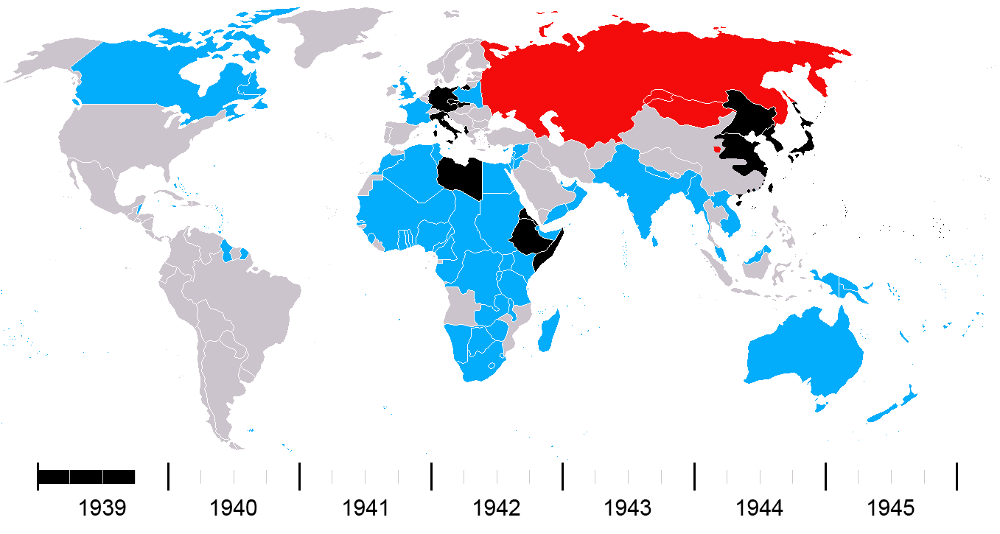

A guerra resultou na morte de mais de 70 milhões de pessoas, na destruição em massa e no Holocausto, em que milhões de judeus e outras minorias foram exterminados. O conflito acabou levando à criação da ONU, à divisão da Europa durante a Guerra Fria e à ascensão dos EUA e da União Soviética como superpotências.
1939-1941: Expansão nazista pela Europa. A Alemanha conquistou a Polônia, França e outros países.
1941: A Alemanha invadiu a União Soviética (Operação Barbarossa), e o Japão atacou a base naval dos EUA em Pearl Harbor, levando os EUA a entrarem na guerra.
1942-1943: Virada dos Aliados. A Batalha de Stalingrado foi uma grande derrota alemã, e os Aliados começaram a avançar na África e no Pacífico.
1944: O Dia D (invasão da Normandia) marcou o início da libertação da Europa Ocidental pelos Aliados.
1945: A Alemanha foi derrotada em maio, com a queda de Berlim. No Pacífico, os EUA derrotaram o Japão após os bombardeios atômicos de Hiroshima e Nagasaki (agosto).
No mapa abaixo vemos as mudanças no quadro de combate mundial no decorrer dos anos.
Os Países Aliados em Azul
Os Países Soviéticos em Vermelho
Os Países do Eixo em Preto
Os Países neutros em Cinza